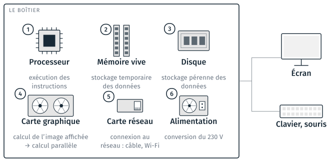
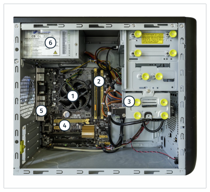
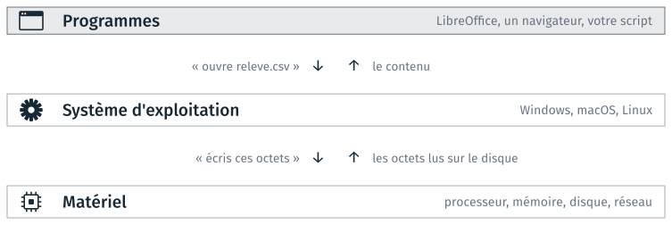
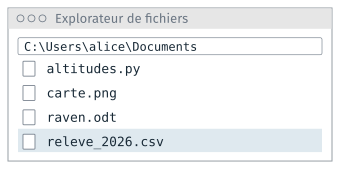
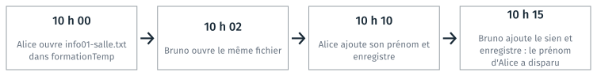

Matériel, logiciels, fichiers et stockage#
Un ordinateur exécute des programmes et enregistre des données dans des fichiers, sur un disque. Le chemin d’un fichier sert à le retrouver, et son extension indique le type de son contenu. Savoir sur quel disque un fichier est enregistré, celui de l’ordinateur ou celui d’un serveur, évite de perdre son travail.
Le TD 1a fait copier les fichiers de la séance sur l’ordinateur, comparer un même texte enregistré dans plusieurs formats, puis modifier à plusieurs un fichier du dossier partagé.
Les composants d’un ordinateur#
Un ordinateur de bureau réunit six composants dans un boîtier. L’écran, le clavier et la souris sont branchés à l’extérieur du boîtier.

Les composants d’un ordinateur et le rôle de chacun.#
Le processeur exécute les instructions des programmes. La page Premier programme le décrit en détail.
La mémoire vive conserve les données des programmes pendant leur exécution.
Le disque conserve les fichiers, y compris quand l’ordinateur est éteint.
La carte graphique a été conçue pour calculer l’image affichée. Elle sert aujourd’hui aussi au calcul parallèle, qui consiste à faire de nombreuses opérations en même temps.
La carte réseau relie l’ordinateur au réseau, par un câble ou en Wi-Fi.
L”alimentation convertit le 230 V du secteur en 12 V, 5 V et 3,3 V.
La carte mère relie les composants par des pistes de cuivre. Un ensemble de pistes entre deux composants s’appelle un bus. Un portable et un téléphone ont les mêmes composants, soudés sur une seule carte.

Un PC de bureau des années 2010, panneau retiré, avec les numéros du schéma (photo PantheraLeo1359531, Wikimedia Commons, CC BY 4.0).#
Sur la photo, le processeur est caché sous son ventilateur (1). La carte réseau est intégrée à la carte mère, et seule sa prise est visible, parmi les connecteurs arrière (5). Cet ordinateur n’a pas de carte graphique séparée, et son processeur calcule aussi l’image affichée. Les emplacements vides (4) permettent d’ajouter une carte graphique.
La température du processeur#
Question
Quelle température atteint un processeur pendant un calcul intensif de plusieurs minutes : 40 °C, 60 °C, 90 °C ou 150 °C ?
Pendant un calcul intensif, un processeur travaille entre 60 et 100 °C.
Situation |
Température de la puce |
|---|---|
au repos, bureautique |
30 à 50 °C |
calcul intensif, poste de bureau |
60 à 90 °C |
calcul intensif, portable fin |
80 à 100 °C |
limite du fabricant, où le processeur ralentit |
95 °C (AMD), 100 °C (Intel) |
Ces valeurs sont des ordres de grandeur. Les limites sont celles des processeurs Ryzen 7000 d’AMD et Core de 13e génération d’Intel, données par les fabricants. Pour AMD, 95 °C pendant un calcul intensif correspond au fonctionnement prévu des Ryzen 7000.
À la limite fixée par le fabricant, le processeur ralentit automatiquement, pour ne pas être endommagé. Sans radiateur ni ventilateur, il atteint cette limite en quelques secondes.
Un processeur consomme 65 à 250 W sur une puce de 1 à 2,5 cm², soit 50 à 100 W par cm². Une plaque de cuisson en consomme moins de 10 W par cm². Le gestionnaire des tâches de Windows n’affiche pas la température du processeur. Elle se lit avec l’outil du fabricant.
La consommation électrique des appareils#
Un serveur GPU est un serveur équipé de cartes graphiques (GPU, graphics processing unit), employé en particulier pour l’IA générative. Il consomme en quelques heures l’électricité d’un portable pendant un an.
Appareil |
Puissance |
Électricité par an |
|---|---|---|
téléphone à touches ou smartphone |
0,01 à 5 W |
0,1 à 7 kWh |
ampoule LED |
5 à 10 W |
7 à 15 kWh |
ordinateur portable |
15 à 45 W |
30 à 60 kWh |
réfrigérateur |
20 à 40 W en moyenne |
170 à 350 kWh |
PC de bureau et carte graphique |
100 à 400 W |
200 à 400 kWh |
logement, tous appareils compris |
500 W en moyenne |
4 300 kWh |
serveur, en continu |
300 à 800 W |
3 000 à 7 000 kWh |
serveur GPU pour l’IA générative, en continu |
10 000 W |
90 000 kWh |
Les valeurs sont des ordres de grandeur. En violet, les repères domestiques. La dernière colonne suppose un téléphone à touches rechargé une fois par semaine (batterie de 3 Wh), un smartphone rechargé chaque jour (15 Wh), un portable allumé 8 h par jour, une ampoule allumée 4 h par jour, et des serveurs allumés en continu.
L’ampoule, le réfrigérateur et le logement servent de repères. Les valeurs du réfrigérateur viennent de l’ADEME. Celle du logement vient d’Enedis, et date de 2024. Un réfrigérateur a une puissance moyenne voisine de celle d’un portable, mais il fonctionne jour et nuit. Il consomme donc en un an trois à douze fois plus qu’un portable allumé 8 h par jour.
Le serveur GPU de la dernière ligne est un NVIDIA DGX H100, qui réunit huit cartes H100. Sa consommation est comptée à pleine puissance toute l’année, soit 10,2 kW × 8 760 h = 89 000 kWh. Cette valeur est un maximum. Un portable consomme donc en un an autant que 3 à 6 heures de ce serveur. Un serveur allumé en continu consomme autant qu’un logement, et le serveur GPU consomme autant qu’une vingtaine de logements.
Exécution de programmes et stockage de données#
Un ordinateur a deux fonctions principales : exécuter des programmes et stocker des données.
![Un cadre « Votre ordinateur » contient deux zones. En haut, « Exécution de programmes », avec trois logiciels, LibreOffice, le navigateur et votre script. En bas, « Stockage de données », avec le disque et deux fichiers, releve.csv et carte.png. À l'horizontale, une flèche « flux » va du clavier et de la souris aux logiciels, et une autre va des logiciels à l'écran et au son. À la verticale, une flèche « ouvrir » monte de releve.csv vers les logiciels, et une flèche « enregistrer » descend des logiciels vers carte.png. À droite, une double flèche « copie », par clé USB ou réseau, relie carte.png à un autre ordinateur.](../../_images/1_entrees_sorties.svg)
Les deux fonctions d’un ordinateur, et les échanges des logiciels avec les périphériques et avec le disque.#
Ce qu’un logiciel reçoit et ce qu’il produit sont de deux natures :
un fichier, qui est conservé sur un disque ;
un flux de données échangé avec un périphérique (clavier, écran, réseau), qui n’est pas conservé une fois lu ou affiché.
Sur le schéma, les flux sont horizontaux. Ils vont du clavier et de la souris vers les logiciels, et des logiciels vers l’écran et le son. Les échanges avec le disque sont verticaux, quand un logiciel ouvre un fichier du disque ou en enregistre un.
Ce qu’un programme garde en mémoire vive disparaît quand il s’arrête. Un fichier enregistré sur le disque est conservé, et peut être rouvert plus tard.
Pour un logiciel, le réseau est un périphérique, en entrée comme en sortie. Les données reçues ou envoyées par le réseau forment un flux. Lors de la copie d’un fichier sur un autre ordinateur, le réseau transporte un flux, et le fichier est enregistré sur un disque à chaque bout.
Couches matérielles et logicielles#
Un programme ne s’adresse pas directement au matériel. Il demande au système d’exploitation (OS, de l’anglais operating system) d’ouvrir un fichier, de réserver de la mémoire ou d’envoyer des données sur le réseau, et le système d’exploitation transmet la demande au matériel.

Un programme passe par le système d’exploitation pour atteindre le matériel.#
Le système d’exploitation répartit aussi le processeur et la mémoire entre les programmes ouverts en même temps, et les isole les uns des autres.
Chaque système d’exploitation a ses conventions : les chemins de fichiers ne s’y écrivent pas de la même façon, et les outils installés diffèrent. Un programme peut donc dépendre du système d’exploitation et du matériel, et ne fonctionner que sur certaines combinaisons.
Question
Où placer une webapp et un driver sur ce schéma ? Quel OS fonctionne sur votre téléphone ?
Sur le schéma suivant, les applications web sont posées sur le navigateur, qui est lui-même un programme. Les pilotes forment la partie basse du système d’exploitation, juste au-dessus du matériel. Un téléphone fonctionne avec le système d’exploitation Android ou iOS.
![La pile précédente, complétée. La couche des programmes est coupée en deux. À gauche, les programmes, application ou app, par exemple LibreOffice et votre script. À droite, le navigateur, Firefox ou Chrome, sur lequel sont posées les applications web, ou webapps, par exemple Géoportail et Google Docs. Dessous, le système d'exploitation, OS, Windows, macOS, Linux, Android ou iOS, et dans le même cadre, juste au-dessus du matériel, les pilotes, ou drivers, de la carte graphique, de l'imprimante ou de la carte réseau. En bas, le matériel.](../../_images/1_couches_logiciels.svg)
Les couches de logiciels, avec les applications web, les pilotes et les systèmes d’exploitation des téléphones.#
Logiciel
Ensemble des programmes, procédés et règles, et éventuellement de la documentation, relatifs au fonctionnement d’un ensemble de traitement de données.
Journal officiel du 22 septembre 2000, vocabulaire de l’informatique.
Parmi les termes de cette section, « logiciel » est le seul à avoir une définition officielle. Les termes courants qui suivent désignent chacun un type de logiciel, sans définition arrêtée ; leurs définitions d’usage sont dans le Grand dictionnaire terminologique de l’Office québécois de la langue française.
- Application
Logiciel qui sert à accomplir une tâche : un tableur, un navigateur, un logiciel de cartographie.
- App
Abréviation anglaise d’application, répandue par les magasins d’applications des téléphones. Le même logiciel existe souvent en site web, en programme de bureau et en application mobile.
- Webapp
Application qui s’utilise dans un navigateur. Une partie de ses calculs se fait en général sur un serveur.
- OS
Operating system, le système d’exploitation : Windows, macOS, Linux, et sur un téléphone, Android ou iOS. Android est construit sur Linux.
- Driver
Le pilote d’un périphérique, qui permet au système d’exploitation de s’en servir. Le système transmet une demande générale au pilote, et le pilote commande le composant en détail. Les pilotes font partie du système d’exploitation, et représentaient plus de 70 % du code de Linux en 2001 (Arpaci-Dusseau, Operating Systems: Three Easy Pieces, chapitre 36).
Ces termes se rangent en deux familles :
le logiciel de base fait fonctionner la machine et donne accès au matériel : le système d’exploitation et les pilotes ;
le logiciel d’application sert à accomplir une tâche : LibreOffice, Firefox, un lecteur de musique.
Fichier, extension et type#
Sur un disque, les données sont stockées dans des fichiers, rangés dans des dossiers. Un fichier permet de transférer des données entre logiciels et entre ordinateurs.

L’explorateur affiche les fichiers du dossier Documents.#
Un fichier sert par exemple à :
relire dans une semaine ce qu’un programme a produit ;
ouvrir dans un logiciel un tableau écrit par un autre logiciel ;
transférer des données d’un ordinateur à un autre, ou vers une clé USB.
Pour qu’un fichier écrit par un logiciel soit lu par un autre, les deux respectent la même convention d’écriture : le format du fichier.
L’extension est la fin du nom d’un fichier, après le dernier point. Elle indique le type du fichier (du texte, une image, une vidéo), et le système d’exploitation s’en sert pour choisir le logiciel à lancer au double-clic.
Le nom et l’extension d’un fichier.#
L’extension se change en renommant le fichier, comme le reste du nom. Le
renommage ne modifie aucun octet du contenu. L’extension indique donc le type
du contenu sans le garantir. Un fichier .odt renommé en .pdf ne devient
pas un PDF, et le lecteur PDF affiche une erreur à son ouverture. Le TD 1b le
fait constater dans le terminal.
Avertissement
Windows masque par défaut les extensions des types qu’il connaît :
raven.odt s’affiche raven. Le réglage se change une fois, dans
l’explorateur : Affichage, Afficher, Extensions de noms de fichiers. Sous
macOS : Finder, Réglages, Avancé, « Afficher tous les suffixes de
fichiers ». Sans ce réglage, renommer un fichier ne montre pas l’extension
qu’on modifie.
Formats et extensions#
Question
Pour chacune des extensions suivantes, dire de quel type de contenu il
s’agit, et si le fichier est lisible dans un éditeur de texte : .mp3,
.mp4, .jpg, .png, .svg, .tif, .pdf, .odt, .xlsx, .csv,
.zip, .exe, .py, .md, .json, .yaml.
Le tableau donne, pour ces extensions, le type de contenu, et si le fichier se lit dans un éditeur de texte.
Extension |
Contenu |
Lisible dans un éditeur de texte |
|---|---|---|
|
son, compressé avec perte |
non |
|
vidéo, le format le plus courant |
non |
|
photo, compressée avec perte |
non |
|
image, compressée sans perte |
non |
|
image vectorielle, décrite en texte |
oui |
|
image, y compris les images géoréférencées (GeoTIFF) |
non |
|
document mis en page |
non |
|
document LibreOffice, une archive ZIP |
non |
|
classeur Excel, une archive ZIP |
non |
|
tableau de valeurs séparées par des virgules |
oui |
|
archive de fichiers |
non |
|
programme Windows |
non |
|
code Python |
oui |
|
documentation en Markdown |
oui |
|
données, réglages |
oui |
|
réglages |
oui |
Six de ces seize formats sont du texte : ils s’ouvrent dans un éditeur,
se comparent ligne à ligne et se versionnent. Parmi eux, le .svg est une
image écrite en texte, et le .csv est un tableau écrit en texte. Les quatre
derniers, .py, .md, .json et .yaml, sont ceux que vous écrirez dans
ce module.
Deux autres formats, .odt et .xlsx, sont des archives ZIP, qui
réunissent plusieurs fichiers texte au format XML. À l’étape 5 du TD 1a, on
extrait l’archive d’un .odt. Le cours 3 montre ce qu’un fichier contient,
octet par octet.
Le vocabulaire d’un chemin#
Un chemin indique où trouver un fichier dans l’arborescence des dossiers. Il se lit de gauche à droite, de la racine au fichier ; chaque séparateur descend d’un dossier.
Question
Les parties d’un chemin ont chacune un nom. Dire à quoi correspond chacun des
termes suivants dans le chemin C:\Users\alice\Documents\raven.odt : la
racine, ou le disque ; un nom de dossier ; le nom du fichier ; le chemin du
fichier ; le dossier parent.
Les parties d’un chemin.#
Terme |
Partie désignée dans l’exemple |
|---|---|
la racine, ou le disque |
|
un nom de dossier |
|
le nom du fichier |
|
le chemin du fichier |
l’ensemble, de la racine au fichier |
le dossier parent |
|
Sous Windows, chaque disque est désigné par une lettre : C:\ pour le
disque du système, D:\ ou E:\ pour un second disque ou une clé USB.
« Dossier parent » est le terme des messages d’erreur et des fonctions de
Python, comme Path.parent. Le cours 3 l’emploie sans le redéfinir. La page
Le terminal décrit l’écriture des chemins dans le
terminal, en absolu et en relatif.
Les emplacements de stockage#
Un fichier est enregistré sur un disque : celui de l’ordinateur, ou celui d’une autre machine que l’ordinateur atteint par le réseau. L’explorateur de fichiers présente les deux de la même façon.
Emplacement |
Qui y a accès |
D’une séance à l’autre |
|---|---|---|
Bureau : disque de l’ordinateur |
votre session, sur cet ordinateur |
conservé, sur cet ordinateur seulement |
|
toute la promotion |
modifiable par tous |
espace personnel : serveur de l’école |
vous, depuis tout ordinateur de l’école |
conservé |
stockage en ligne : serveur hors de l’école |
vous, et qui vous invitez |
conservé, recopié sur l’ordinateur |
clé USB |
qui a la clé |
ce que vous emportez |
Le serveur de l’école est relié aux ordinateurs de la salle par le réseau local. Le stockage en ligne est sur des serveurs hors de l’école, atteints par Internet. Depuis l’école, l’accès à Internet passe par le proxy, une machine du réseau local de l’école, et nécessite un identifiant et un mot de passe.
![À gauche, dans un cadre, le réseau local de l'école. Trois postes de la salle, chacun avec son boîtier, sont reliés à un commutateur. Le serveur de l'école est relié au même réseau, puis le proxy, marqué d'un cadenas et de la mention « mot de passe », puis le routeur, au bord du cadre. Deux dossiers renvoient chacun à son disque : Bureau, de chemin C:\Users\eleve\Desktop, au boîtier d'un poste ; formationTemp, de chemin \\serveur\formationTemp, au serveur de l'école. À droite, hors du cadre, le routeur mène à Internet, puis au stockage en ligne (Google Drive, OneDrive, Dropbox, Nextcloud) et, en bas, à votre ordinateur, chez vous.](../../_images/1_stockage_reseau.svg)
Le réseau local de l’école, Internet, et les disques où un fichier peut être enregistré.#
Le chemin d’un dossier indique le disque où il est enregistré. La barre
d’adresse de l’explorateur affiche ce chemin. Le chemin du Bureau,
C:\Users\eleve\Desktop, commence par la lettre d’un disque de l’ordinateur.
Un chemin qui commence par deux barres obliques inversées, \\, désigne un
dossier d’une autre machine. Le nom qui suit ces deux barres est celui de la
machine, ici le serveur de l’école : \\serveur\formationTemp.
Depuis chez soi,
formationTempet l’espace personnel ne sont pas accessibles. Depuis l’école, Internet l’est.Avec un stockage en ligne synchronisé (OneDrive, Google Drive, Dropbox, Nextcloud), le fichier est enregistré sur l’ordinateur et sur le serveur, et un logiciel recopie chaque modification dans les deux sens.
Lire un fichier sur le réseau est plus lent que sur le disque de l’ordinateur.
Modifications simultanées d’un fichier partagé#
Un fichier du dossier partagé est le même pour toute la salle. Avec un éditeur de texte, le dernier qui enregistre remplace la version de l’autre.

Le second enregistrement du fichier partagé remplace le premier.#
L’étape 6 du TD 1a reproduit cette situation avec toute la salle. Le Bloc-notes lit le fichier une fois, à l’ouverture. À l’enregistrement, il réécrit le fichier entier, avec le contenu lu à l’ouverture et la ligne ajoutée. Le fichier rouvert est donc celui du dernier enregistrement.
LibreOffice crée un fichier de verrou, comme .~lock.raven.odt#, et affiche
un avertissement à la deuxième personne qui ouvre le document. Le Bloc-notes
et Notepad++ ne le font pas.
Avertissement
Ne pas travailler dans formationTemp. Copier les fichiers sur le disque de
l’ordinateur, et travailler dans la copie. La page Récupérer les fichiers
d’une séance décrit la copie.
Git, au cours 2, et la forge, au cours 6, évitent ce problème : chacun travaille dans sa copie, et les modifications se fusionnent.
TD de la partie#
TD 1a — Fichiers, formats et extensions, 15 minutes, à la souris :
copier l’archive de la séance depuis
formationTempsur le Bureau, et l’extraire ;afficher les extensions des fichiers dans l’explorateur ;
exporter
raven.odten PDF et en PNG, puis l’enregistrer en texte ;essayer de sélectionner, de chercher et de modifier le texte dans chacun de ces fichiers ;
comparer la taille de
raven_une_ligne.txt, deraven_une_ligne.donneeset deraven.odt, puis les ouvrir dans le Bloc-notes ou dans Notepad++ ;à l’étape 5, facultative, extraire une copie de
raven.odtrenommée enraven.zip, et ouvrir les fichiers XML qu’elle contient ;à l’étape 6, ajouter son prénom au fichier
info01-salle.txtdu dossier partagé, en même temps que toute la salle.
Les TD des autres parties sont dans Travaux dirigés de la séance 1.